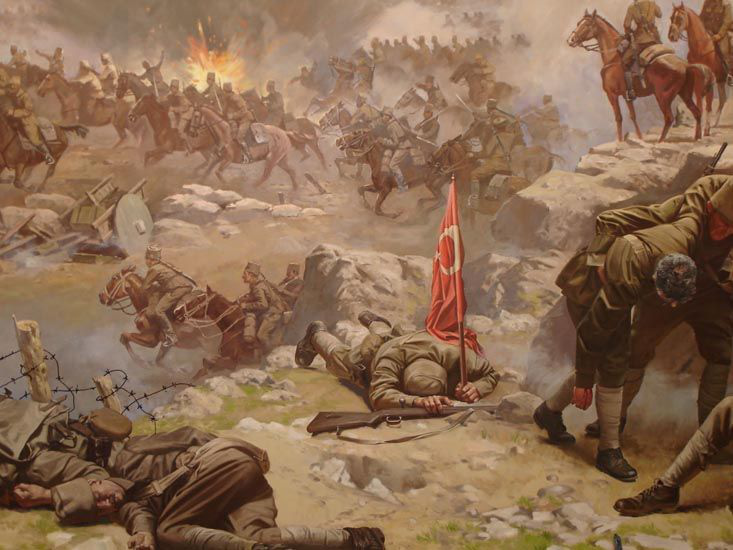
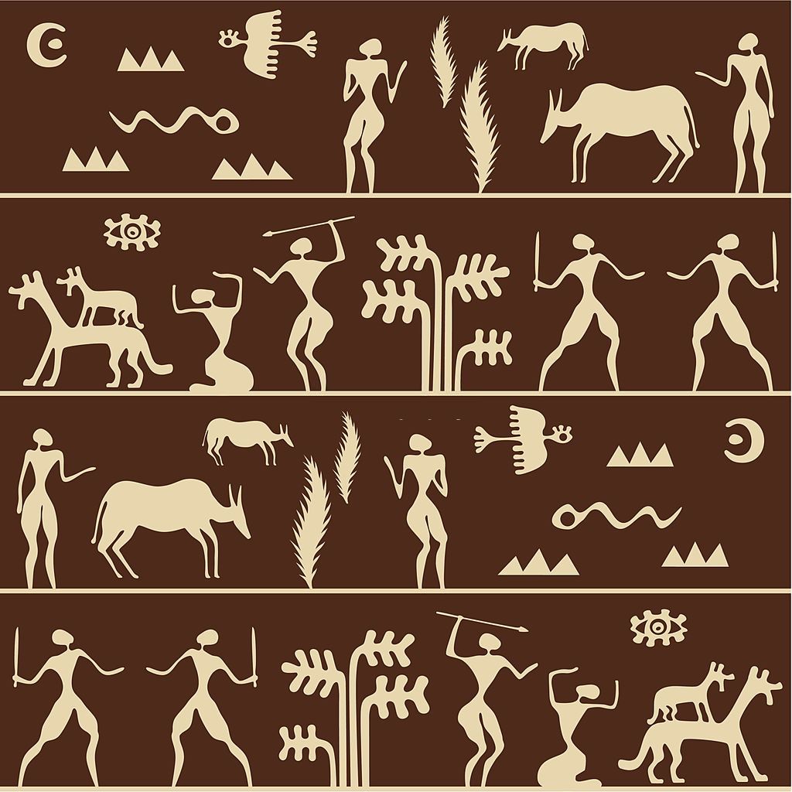
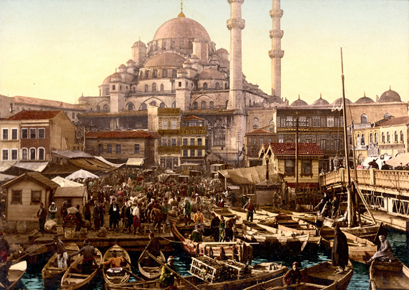
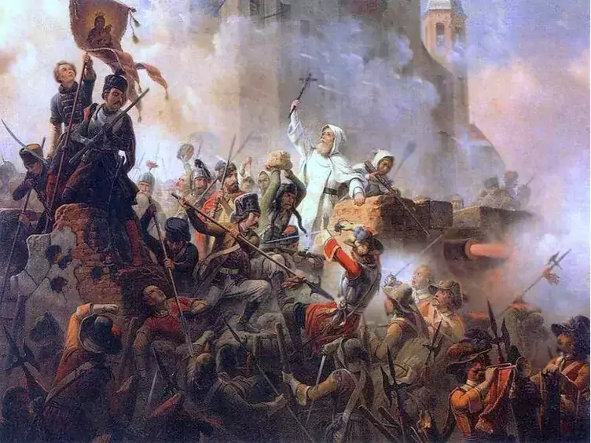

<div class="container">
    <div class="c">
        <input type="radio" name="a" id="cr-1" checked>
        <label for="cr-1" style="--hue: 32"></label>
        <div class="ci" style="--z: 4">
            <h2 class="ch" style="--h: 32; --s: 80%; --l: 90%">GENEL TARİH</h2>
            
        </div>
        <input type="radio" name="a" id="cr-2">
        <label for="cr-2" style="--hue: 82"></label>
        <div class="ci" style="--z: 3">
            <h2 class="ch" style="--h: 82; --s: 80%; --l: 90%">İLK ÇAĞ UYGARLIKLARI</h2>
            
        </div>
        <input type="radio" name="a" id="cr-3">
        <label for="cr-3" style="--hue: 40"></label>
        <div class="ci" style="--z: 2">
            <h2 class="ch" style="--h: 40; --s: 100%; --l: 89%">OSMANLI TARİHİ</h2>
            
        </div>
        <input type="radio" name="a" id="cr-4">
        <label for="cr-4" style="--hue: 210"></label>
        <div class="ci" style="--z: 1">
            <h2 class="ch" style="--h: 210; --s: 70%; --l: 90%">AVRUPA TARİHİ</h2>
            
        </div>
    </div>
</div>